Activity: Creating an alternate assembly
This activity guides you through the process of creating alternate versions of an assembly.
When you complete this activity, you will be able to:
-
Convert a normal assembly into an alternate assembly.
-
Add members to an alternate assembly.
-
Define unique variable values for individual members.
-
Replace occurrences for a member.
-
Exclude occurrences for a member.
-
Exclude and reapply assembly relationships for a member.
Click here to download the activity file.
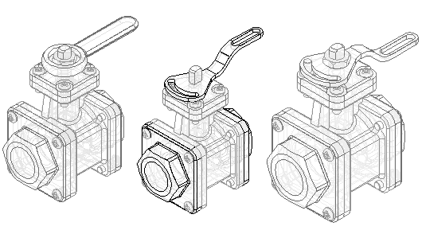
Create an alternate assembly for a valve. The valve in the existing assembly is open. Create an alternate assembly with the valve closed.
Open Alternate.asm located in the folder where you loaded the parts files needed for this activity. Open the assembly with all the parts active.
On the View tab, click Color Manager and ensure the following options are set.
-
Set the Use individual part styles option.
-
Set the Show and allow assembly style overrides option.
-
Clear the Show part face colors option.
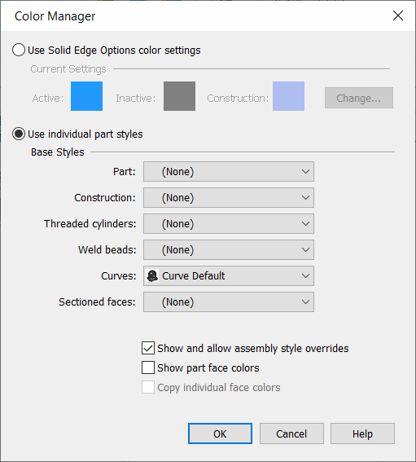
-
Click OK.
Note:You create a family of assemblies by converting a normal assembly document into an alternate assemblies document. You can only convert the assembly document once, and you must specify whether you want to convert it into a family of assemblies or an alternate position assembly. In this activity, you convert the assembly into a family of assemblies.
In PathFinder, click the Family of Assemblies tab .
Click the New button .
Do the following:
-
Ensure that the Create a Family of Assemblies option is selected.
-
In the Name current member box, type Default Type 1 Open and press the Tab key.
-
In the Name new member* box, type Type 1 Closed.
-
Click OK.
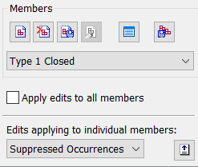
On the Family of Assemblies tab, notice that the Type 1 Closed member is the active member. When you create a new family of assemblies, the name you type in the Name new member box becomes the active member.
Modify the Type 1 Closed family member by overriding the value of the angular relationship that controls the position of the valve subassembly and handle. First, add the variable to the member variables list.
On the Family of Assemblies tab, select the Member Variables option.
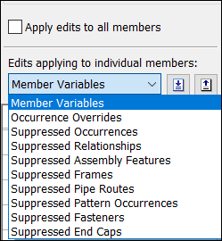
On the Tools tab, click Variables to display the Variable Table. Click the Filter button and set the values as shown, and then click OK.
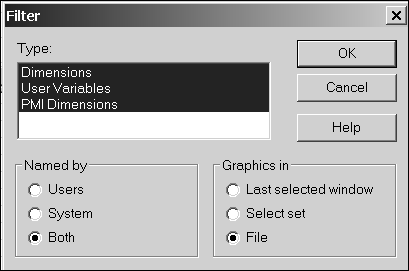
Click the ValveAngle variable, as shown.
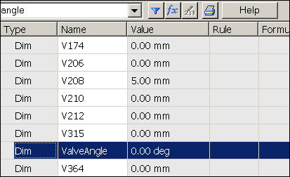
On the Family of Assemblies tab, click the Add Variables button .
The variable is added to the Member Variables list. When you add variables to the Member Variables list, you can no longer edit them within the Variable Table. You must edit them in the member variables list on the Family of Assemblies tab.
Close the Variable Table.
In the Member Variables list, position the cursor over the variable as shown, but do not click yet.
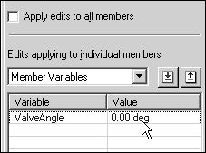
In the graphics window, notice the faces used to define the angle relationship highlight as shown in the following illustration.
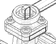
Position the cursor over the variable value as shown, and then double click the left mouse button.
Type 90, and then press the Enter key.
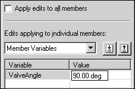
In the graphics window, notice that the handle rotated 90° clockwise. In addition to the handle, the valve subassembly also rotated.
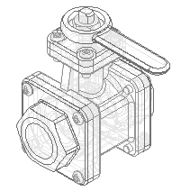
On the Family of Assemblies tab, select the Default Type 1 Open member as shown.
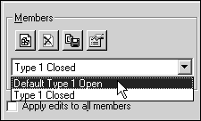
For the Default Type 1 Open member, the ValveAngle variable was also added to the Member Variables list, but the valve handle is still in the open position. The variable value you changed only affected the Type 1 Closed family member.
When you add a variable to the Member Variables list for one member, the variable is added to the Member Variables list for all members that contain the variable, but each member can have a different value assigned to the variable.
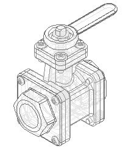
Create another family member, as shown. For this family member, delete the original handle and place a new handle. Use the replace part command to replace the TopFlange01.asm subassembly with a different subassembly.
On the Family of Assemblies tab, click the New button .
In the New Member dialog box, type Type 2 Open, and then click OK.
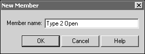
The new family member has the same characteristics as Default Type 1 Open. When you create a new family member, it has the same characteristics as the family member that is active when you create the new member. In this case, the active member was Default Type 1 Open.
On the Family of Assemblies tab, do the following:
-
Select the Suppressed Occurrences option.
-
Ensure that the Apply edits to all members check box is cleared.
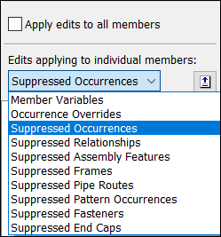
Note:When you exclude occurrences, you can exclude them for all family members or for only the active member. In this case, you want to exclude the handle for only the active member.
When you exclude an occurrence for all family members, the occurrence is physically deleted from the assembly file, and it is not added to the excluded occurrences list.
-
Click the Assembly PathFinder tab .
-
In Assembly PathFinder, select Handle01.par and delete it.
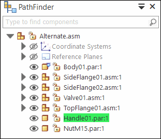
-
A dialog box displays to confirm that you want to exclude the part for the active family member.
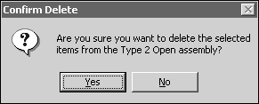
-
In the Confirm Delete dialog box, click Yes.
-
To make it easier to position the new handle, hide the nut part.
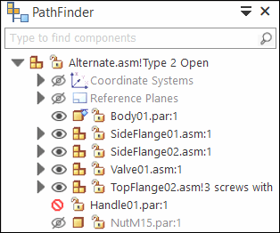
-
In PathFinder, click the Parts Library tab .
-
On the Parts Library tab, click the arrow on the right side of the Look In list. Browse to the folder where the activity files are located.
-
Drag Handle02.par into the assembly window.
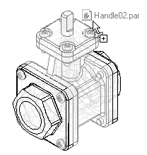
Position the handle using FlashFit as directed in the following steps.
-
Mate the two planar faces shown.
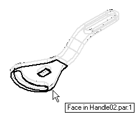
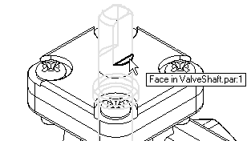
-
Axial align the curved faces shown.
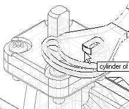
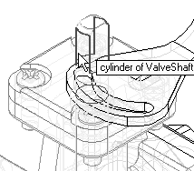
-
Mate the two planar faces shown.
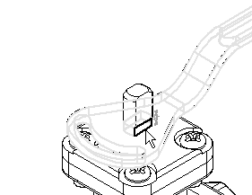
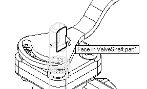
The handle is fully positioned in the assembly.
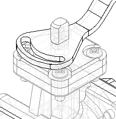
Save the assembly.
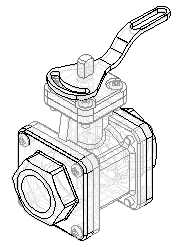
Make some observations of the alternate assemblies created so far.
In PathFinder, click the Family of Assemblies tab .
In the Suppressed Occurrences list for the Type 2 Open family member, notice that Handle01.par has been added to the list.
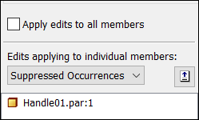
On the Family of Assemblies tab, activate the member named Default Type 1 Open.
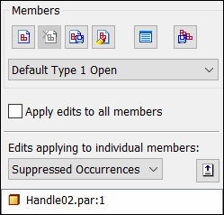
For this family member, Handle02.par is in the Suppressed Occurrences list. Also notice that the assembly display updated when you activated this family member.
Finish defining the characteristics for member Type 2 Open by replacing a subassembly.
On the Family of Assemblies tab, activate the member named Type 2 Open.
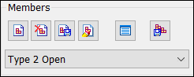
Click the Assembly PathFinder tab.
In Assembly PathFinder, select the entry TopFlange01.asm.
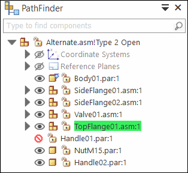
Choose the Home tab→Modify group→Replace Part command
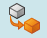
.You can use the Replace Part command to replace a part or subassembly within the assembly. When replacing a subassembly, you must select it within Assembly PathFinder.
On the command bar, choose Accept (checkmark)  .
.
In the Replacement Part dialog box, do the following:
-
Set the Look In location to the folder where the activity files are located.
-
Set the Files of type option to Assembly Files (*.asm).
-
Select the assembly file TopFlange02.asm.
-
Click the Open button.
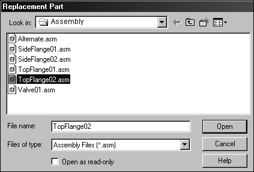
Note:Since the replacement subassembly is also a family of assemblies, you must specify which family member you want to use as the replacement.
In the Assembly Member dialog box, select the member named 3 screws with stud, and then click OK.
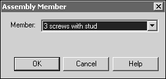
In the assembly window, notice the replacement subassembly does not have four Phillips-head screws. In place of one of the screws is a stud that serves to limit the rotation of the new handle. Also notice in Assembly PathFinder, the member name is appended to the filename.
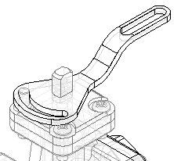
In PathFinder, click the Family of Assemblies tab .
On the Family of Assemblies tab, select the Occurrence Overrides option.
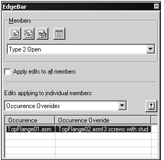
Notice for this member that TopFlange01.asm was overridden by TopFlange02.asm!3 screws with stud.
When you replace a part or subassembly, the original occurrence is added to the left column in the occurrence overrides list, and the replacement occurrence is added to the right column in the occurrence overrides list.
Create another family member as shown. For this family member, change the position of Handle02.par. This family member illustrates how you can exclude relationships for a part. Excluding relationships for a part allows you to add new relationships that change the position of the part.
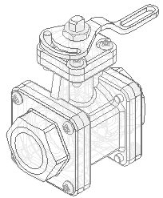
On the Family of Assemblies tab, click the New button .
In the New Member dialog box, type Type 3 Open Reverse Handle, and then click OK.
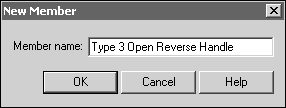
The new member you created is active, and it has the characteristics of the Type 2 Open member.
On the Family of Assemblies tab, select the Suppressed Relationships option.
Ensure that the Apply edits to all members check box is cleared.
When you suppress relationships, you can suppress them for all family members or for only the active member. In this case, you want to suppress the relationships for only the active member.
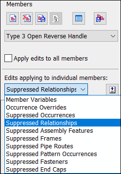
Click the Assembly PathFinder tab.
In the top pane of Assembly PathFinder, select Handle02.par as shown.
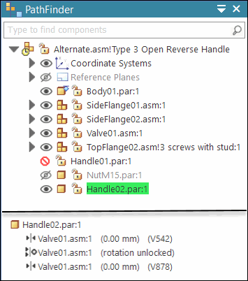
In the bottom pane of Assembly PathFinder, delete the two relationships shown.
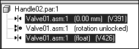
Notice that the symbol adjacent to Handle02.par changes to indicate it is no longer fully positioned.
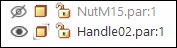
In PathFinder, click the Family of Assemblies tab .
Notice that the relationships you suppressed were added to the Suppressed Relationships list for the family member named Type 3 Open Reverse Handle.
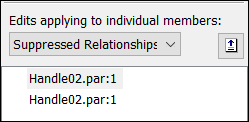
Click the Assembly PathFinder tab.
In the top pane of Assembly PathFinder, select Handle02.par.
On the command bar, click the Edit Definition button
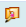
.Establish a Mate relationship between the faces shown.
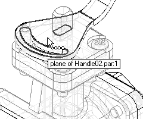
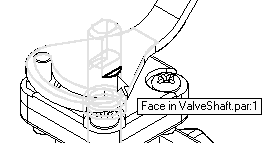
The handle is mated to the shaft as shown.
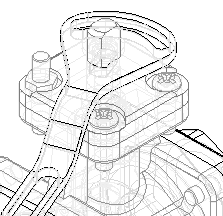
Continue using FlashFit to mate the faces shown.
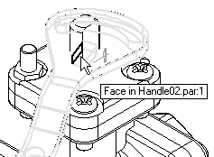
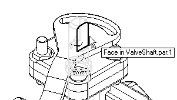
Click the Offset Type button, and then click Floating Offset .
This setting allows the faces to take on whatever offset value is appropriate to satisfy the other relationships that position the two parts.
The handle is fully positioned in the assembly.
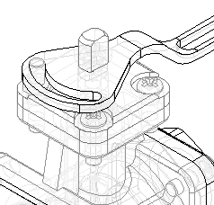
Fit the assembly and then save the assembly.
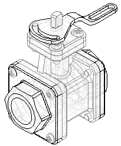
In Assembly PathFinder, show NutM15.par.
Make some observations of the alternate assemblies created so far.
In PathFinder, click the Family of Assemblies tab .
On the Family of Assemblies tab, activate the member named Type 2 Open.
There are two relationships on the suppressed relationships list for this family member. These relationships were added to the list automatically when you repositioned the handle for the member named Type 3 Open Reverse Handle. When the Apply edits to all members option is cleared, the relationships you add to position a part for one member are automatically excluded from the other members that contain the same part.
Also notice that for this member, NutM15.par is still hidden. When you change the display of a part for one family member, the display of the same part in other family members is not changed.
Create a new assembly document for the family member named Type 3 Open Reverse Handle.
On the Family of Assemblies tab, activate the member named Type 3 Open Reverse Handle.
On the Family of Assemblies tab, click the Save Member As button .
In the Save Member dialog box, save the active member (using the default name) to the folder where the activity files are located.
If a dialog box displays and asks if you want to save the current assembly first, click the Yes button.
Remember the name and location, because you will be opening this document in the next step.
Click the File tab. Click the Open button .
In the Open File dialog box, browse to the location where you saved the new file, and then open it with all the parts active.
For the new assembly, no family members are listed on the Family of Assemblies tab.
When you save a family member as a separate assembly, it is saved as a normal assembly document. Saving family members as separate assembly documents is useful because some downstream applications do not recognize assembly documents that have been converted to alternate assemblies. For example, Simply Motion only allows you to open normal assembly documents.
Save the assembly.
Close and save both assembly documents.
Create a new draft document and place a drawing view of one of the family of assembly members.
Click the File tab.
On the File menu, click New→New.
From the Standard Templates list, choose ISO Metric, choose iso metric draft.dft, and then click OK.
Choose the Home→Drawing Views→View Wizard command .
In the Select Model dialog box, select Alternate.asm, and then click Open.
The Family of Assembly Member page of the Drawing View Wizard is displayed, so you can specify which family member you want. From the Family member list, select the Type 3 Open Reverse Handle option, and then click Next.
Position the drawing view on the drawing sheet, and then click to place the drawing view.
Save and close the draft document. This completes the activity.
In this activity you learned how to create an alternate assembly. In the alternate assembly, you learned how to add new members, define unique variables for individual members, exclude member occurrences and reapply assembly relationships for a member.
-
Click the Close button in the upper-right corner of this activity window.
Answer the following questions:
-
In the Family of Assemblies tab in PathFinder, what two types of assemblies can you create?
-
In a family of assemblies, which substitutions, modifications or exclusions are allowed?
-
Can an assembly family member be saved as a unique assembly?
-
How do you place an assembly family member on a drawing sheet?
-
In the Family of Assemblies tab in PathFinder, what two types of assemblies can you create?
In the Family of Assemblies tab in PathFinder, you can create a family of assemblies or an alternate assembly.
-
In a family of assemblies, which substitutions, modifications or exclusions are allowed?
The list of substitutions modifications and exclusions is:
-
Offset values for assembly relationships
-
Occurrence overrides
-
Suppressed occurrences
-
Suppressed Relationships
-
Suppressed Assembly Features
-
Suppressed Frames
-
Suppressed Pipe Routes
-
Suppressed Pattern Occurrences
-
Suppressed Fasteners
-
Suppressed End Caps
-
-
Can an assembly family member be saved as a unique assembly?
An assembly family member can be saved as a unique assembly.
-
How do you place an assembly family member on a drawing sheet?
When the drawing view wizard is run on the alternate assembly, the list of family members is provided for selection of the correct member